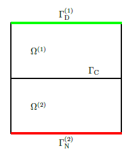
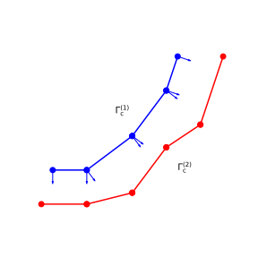
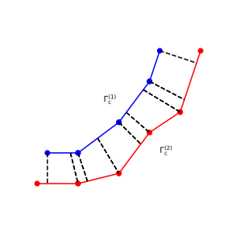

Theory
Let us consider the simple following simple Laplace problem in the domain $\Omega=\left\{ \left(x,y\right)\in\mathbb{R}^{2}|0\leq x,y\leq2\right\}$.

The strong form of the problem is
Corresponding weak form of the problem is to find $u^{\left(i\right)}\in\mathcal{U}$ and $\lambda\in\mathcal{M}$ such that
In more general form is to find $u^{\left(i\right)}\in\mathcal{U}$ and $\lambda\in\mathcal{M}$ such that
where
After substituting interpolation polynomials to weak form we get so called mortar matrices $\boldsymbol{D}$ and $\boldsymbol{M}$:
where $\chi$ is mapping between contacting surfaces. Let us define some contact pair:
coords = Dict(1 => [8.0, 10.0],
2 => [7.0, 7.0],
3 => [4.0, 3.0],
4 => [0.0, 0.0],
5 => [-3.0, 0.0],
6 => [12.0, 10.0],
7 => [10.0, 4.0],
8 => [7.0, 2.0],
9 => [4.0, -2.0],
10 => [0.0, -3.0],
11 => [-4.0, -3.0])
elements = Dict(
1 => [1, 2],
2 => [2, 3],
3 => [3, 4],
4 => [4, 5],
5 => [6, 7],
6 => [7, 8],
7 => [8, 9],
8 => [9, 10],
9 => [10, 11])
slave_element_ids = [1, 2, 3, 4]
slave_elements = Dict(i => elements[i] for i in slave_element_ids)
master_element_ids = [5, 6, 7, 8, 9]
element_types = Dict(i => :Seg2 for i=1:length(elements))
For first order elements, normal direction is not unique. For that reason some preprocessing needs to be done to calculate unique nodal normals.
Unique nodal normals can be calculated several different ways, more or less sophisticated. An easy solution is just to take average of the normals of adjacing elements connecting to node $k$, i.e.
where $\boldsymbol{n}_{k}^{\left(e\right)}$ means the normal calculated in element $e$ in node $k$, and adj means adjacing elements.
This is implemented in function calculate_normals:
normals = calculate_normals(slave_elements, element_types, coords)Dict{Int64,Array{Float64,1}} with 5 entries:
4 => [0.316228, -0.948683]
2 => [0.885779, -0.464107]
3 => [0.707107, -0.707107]
5 => [0.0, -1.0]
1 => [0.948683, -0.316228]
This package follows the idea of continuous normal field, proposed by Yang et al., where all the quantities are projected using only slave side normals. If we wish to find the projection of a slave node $\boldsymbol{x}_{\mathrm{s}}$, having normal vector $\boldsymbol{n}_{\mathrm{s}}$ onto a master element with nodes $\boldsymbol{x}_{\mathrm{m1}}$ and $\boldsymbol{x}_{\mathrm{m2}}$, we are solving $\xi^{\left(2\right)}$ from the equation
The equation to find the projection of a master node $\boldsymbol{x}_{\mathrm{m}}$ onto a slave element with nodes $\boldsymbol{x}_{\mathrm{s1}}$ and $\boldsymbol{x}_{\mathrm{s2}}$ and normals $\boldsymbol{n}_{\mathrm{s1}}$ and $\boldsymbol{n}_{\mathrm{s1}}$ is
where $\xi^{\left(1\right)}$ is the unknown parameter. First equation is linear and second is quadratic (in general). Second equation is also linear if $\boldsymbol{n}_{\mathrm{s1}}=\boldsymbol{n}_{\mathrm{s2}}$.
These equations are solved in function project_from_master_to_slave and project_from_slave_to_master. They are used in function calculate_segments, which is used to calculate segmentation of interface.
segmentation = calculate_segments(slave_element_ids, master_element_ids,
elements, element_types, coords, normals)Dict{Int64,Array{Tuple{Int64,Array{Float64,1}},1}} with 4 entries:
4 => Tuple{Int64,Array{Float64,1}}[(8, [-1.0, -0.504971]), (9, [-0.504971, 1.…
2 => Tuple{Int64,Array{Float64,1}}[(5, [-1.0, -0.592152]), (6, [-0.592152, 0.…
3 => Tuple{Int64,Array{Float64,1}}[(7, [-1.0, 0.0403503]), (8, [0.0403503, 1.…
1 => Tuple{Int64,Array{Float64,1}}[(5, [-1.0, 1.0])]
After segmentation is calculated, it's possible to integrate over non-conforming surface to calculate mortar matrices $\boldsymbol{D}$ and $\boldsymbol{M}$ or $\boldsymbol{P}=\boldsymbol{D}^{-1}\boldsymbol{M}$. Calculation projection matrix $\boldsymbol{P}$ is implemented as function calculate_mortar_assembly:
s, m, D, M = calculate_mortar_assembly(elements, element_types, coords,
slave_element_ids, master_element_ids)([1, 2, 3, 4, 5], [6, 7, 8, 9, 10, 11],
[1, 1] = 1.05409
[2, 1] = 0.527046
[1, 2] = 0.527046
[2, 2] = 2.72076
[3, 2] = 0.833333
[2, 3] = 0.833333
[3, 3] = 3.33333
[4, 3] = 0.833333
[3, 4] = 0.833333
[4, 4] = 2.66667
[5, 4] = 0.5
[4, 5] = 0.5
[5, 5] = 1.0,
[1 , 6] = 0.950404
[2 , 6] = 0.73246
[3 , 6] = 0.00709177
[1 , 7] = 0.630735
[2 , 7] = 2.59715
[3 , 7] = 0.622407
[2 , 8] = 0.737632
[3 , 8] = 2.49695
[4 , 8] = 0.167215
[2 , 9] = 0.0138965
[3 , 9] = 1.71965
[4 , 9] = 1.61681
[5 , 9] = 0.00712785
[3 , 10] = 0.153905
[4 , 10] = 2.00259
[5 , 10] = 0.856952
[4 , 11] = 0.213377
[5 , 11] = 0.63592)This last command combines everything above to single command to calculate projection matrix needed for finite element codes.
References
- Wikipedia contributors. "Mortar methods." Wikipedia, The Free Encyclopedia. Wikipedia, The Free Encyclopedia.
- Maday, Yvon, Cathy Mavriplis, and Anthony Patera. "Nonconforming mortar element methods: Application to spectral discretizations." (1988).
- Yang, Bin, Tod A. Laursen, and Xiaonong Meng. "Two dimensional mortar contact methods for large deformation frictional sliding." International journal for numerical methods in engineering 62.9 (2005): 1183-1225.
- Yang, Bin, and Tod A. Laursen. "A contact searching algorithm including bounding volume trees applied to finite sliding mortar formulations." Computational Mechanics 41.2 (2008): 189-205.
- Wohlmuth, Barbara I. "A mortar finite element method using dual spaces for the Lagrange multiplier." SIAM journal on numerical analysis 38.3 (2000): 989-1012.